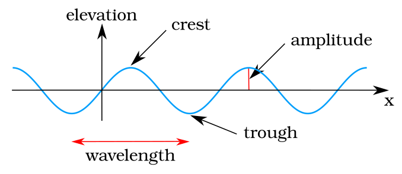
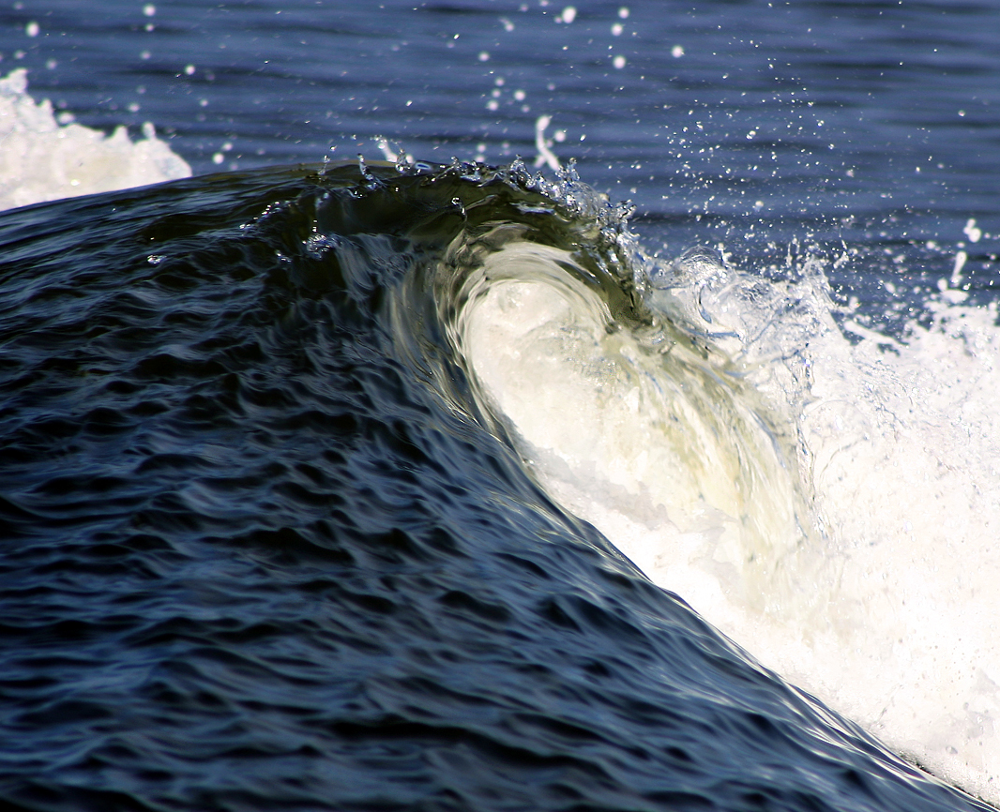
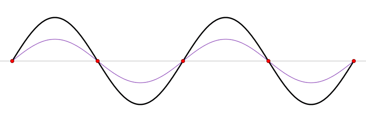

Transverse (top): particles move perpendicular to wave travel — light, ripples on water. Longitudinal (bottom): particles compress and rarefy along the direction of travel — sound waves. v = f × λ |
T = 1/f

Sine wave — amplitude, wavelength, and period

Ocean waves — transverse water waves

Standing wave — nodes and antinodes
Wave Interference & Double Slit
40 px
Drag the sources
Constructive & Destructive Interference
Two point sources emit circular waves. Where crests meet crests: bright (constructive). Where crests meet troughs: dark (destructive). This is the classic double-slit experiment — wave nature of light proven by Young in 1801.
Sound Wave Visualization
440 Hz
Sound Properties
Sound travels at ~343 m/s in air at 20°C. λ = v / f |
T = 1 / f
Human hearing range: 20 Hz (sub-bass) to 20,000 Hz (highest audible). The compression pattern below shows how air molecules are pushed together (compression) and pulled apart (rarefaction).
Fourier Decomposition
Fourier's Theorem
Any periodic waveform can be built from a sum of sine waves at integer multiples of a fundamental frequency. The thick white line is the composite wave; the thin colored lines are individual harmonics.
f(t) = Σ aₙ sin(n·ωt)